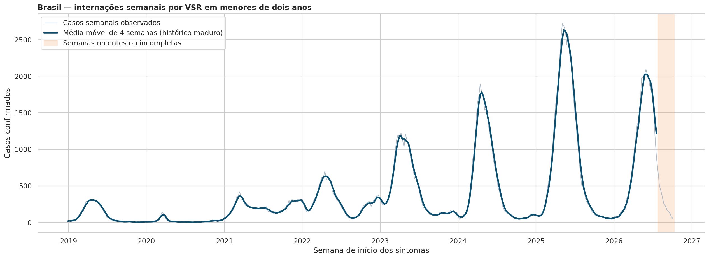
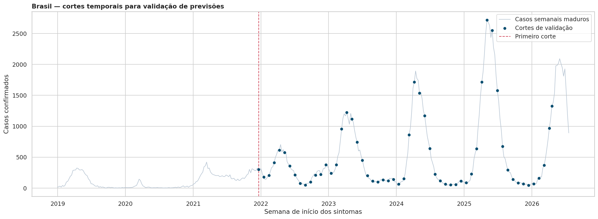

Como estimar, com antecedência, a quantidade semanal de internações por VSR, respeitando sazonalidade, diferenças regionais e mudanças entre temporadas?
O resultado esperado é uma previsão útil para apoiar planejamento de leitos, equipes e insumos.
Uma análise de séries temporais sobre internações por Síndrome Respiratória Aguda Grave associadas ao vírus sincicial respiratório em crianças menores de dois anos no Brasil.
A previsão não explica todas as causas da doença. Ela estima o volume futuro com a informação disponível em cada data.
Como estimar, com antecedência, a quantidade semanal de internações por VSR, respeitando sazonalidade, diferenças regionais e mudanças entre temporadas?
O resultado esperado é uma previsão útil para apoiar planejamento de leitos, equipes e insumos.
Contagem semanal de internações confirmadas por VSR em crianças menores de dois anos.
Unidades da Federação, regiões e Brasil. Essa estrutura permite enxergar o padrão geral e suas diferenças locais.
Fonte: SIVEP-Gripe / OpenDataSUS. Arquivos anuais de 2019 a 2026.
SRAG hospitalizada, criança menor de dois anos, confirmação laboratorial de VSR, UF válida e data de início dos sintomas.
Verificamos campos, datas, consistência e duplicidades. Dois pares duplicados foram resolvidos por uma regra temporal documentada.
Agregamos registros individuais em semanas epidemiológicas por UF, região e Brasil.
A análise exploratória orienta os modelos candidatos. Ela não escolhe o vencedor antes da validação.



Um modelo mais complexo só terá valor se reduzir o erro de forma consistente fora da amostra.
Para prever uma semana futura, usamos a semana epidemiológica equivalente da temporada anterior. Essa referência preserva o ciclo anual e estabelece o padrão mínimo de desempenho.
Mantém o último valor observado.
Representa nível, tendência e sazonalidade.
Representa memória de curto prazo e padrão sazonal.
Busca coerência entre UF, região e Brasil.
Não usamos divisão aleatória: ela misturaria informações de futuro e passado.

Em cada corte, o modelo vê apenas o passado, produz a previsão e depois é comparado ao valor observado.
O próximo passo é medir se ETS, SARIMA e abordagens hierárquicas superam o ingênuo sazonal em cada horizonte e escala geográfica.
Há sazonalidade anual, forte dependência semanal, diferenças regionais e séries esparsas em parte das UFs.
Quais modelos entregam menor erro e previsões úteis para antecipar internações pediátricas por VSR.